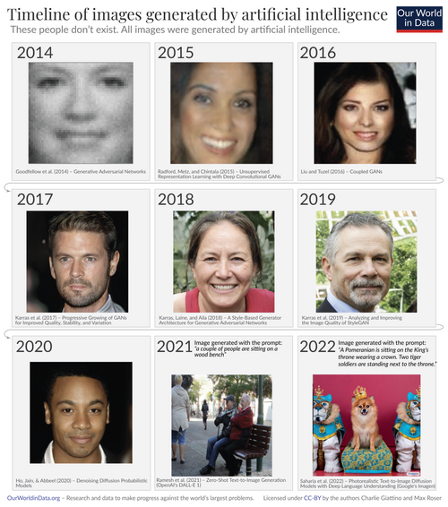
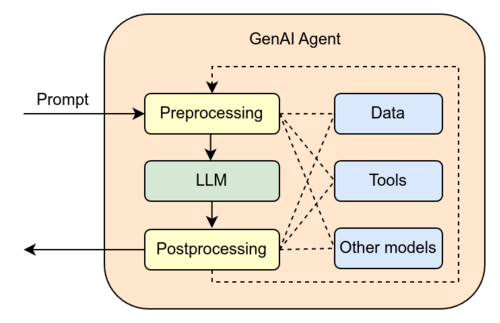
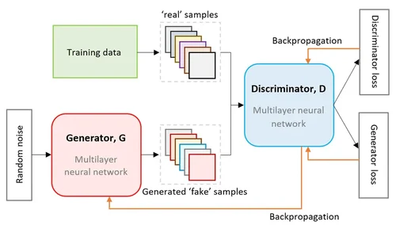
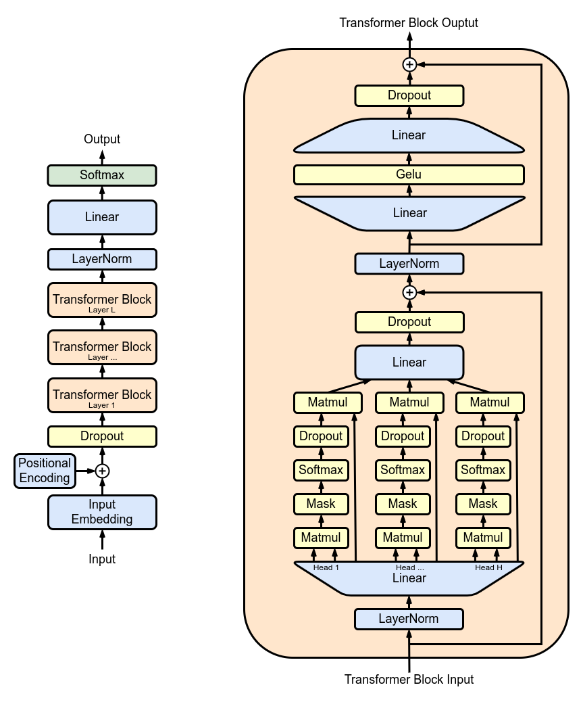
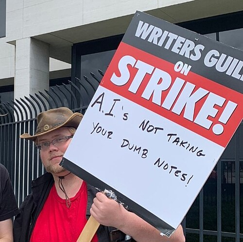
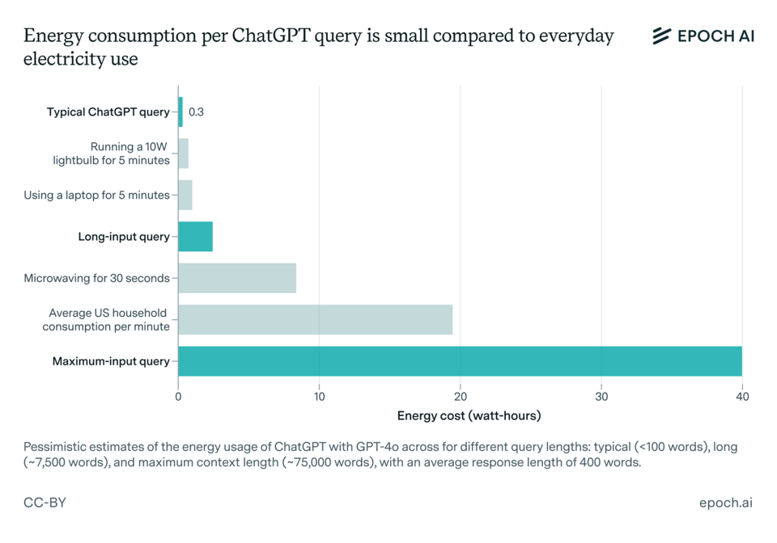

Generative AI Article
Overview
Generative artificial intelligence, also known as generative AI or GenAI, is a subfield of artificial intelligence that uses generative models to produce text, images, video, audio, computer code, and other forms of digital data.
Generative models learn patterns and structures found in their training data and use those patterns to create new data in response to input. This input often takes the form of natural-language prompts.
The prevalence of generative AI tools increased significantly during the artificial intelligence boom of the 2020s. The release of ChatGPT in November 2022 helped introduce generative AI to a much wider audience.
Improvements in deep neural networks, particularly large language models based on transformer architecture, contributed to this growth.
Popular generative AI applications include conversational systems such as ChatGPT, Claude, Microsoft Copilot, Google Gemini, Grok, and other chatbots.
Generative AI also includes text-to-image systems such as DALL-E, Stable Diffusion, Adobe Firefly, and Midjourney, as well as systems capable of generating video, audio, and computer code.
Companies have used generative AI in software development, healthcare, finance, entertainment, marketing, writing, and product design.
The technology has also created concerns involving misinformation, copyright, cybersecurity, employment, bias, and environmental effects.
History
Early History
The origins of algorithmically generated media can be traced to the development of the Markov chain.
Russian mathematician Andrey Markov introduced the concept in 1906 and used it to analyze patterns of vowels and consonants in the novel Eugene Onegin.
Once trained on a body of text, a Markov chain can generate probabilistic text. These methods were early examples of computers producing new material based on patterns found in existing information.
By the early 1970s, artists had begun using computers for other generative techniques. Artist Harold Cohen developed AARON, a computer program designed to create paintings autonomously.
During the 1980s and 1990s, generative planning was also used in artificial intelligence systems. These systems generated sequences of actions intended to reach specific goals.
Generative Neural Networks

During the late 2000s and early 2010s, improvements in deep learning led to major advances in image classification, speech recognition, and natural-language processing.
Machine learning uses both discriminative models and generative models. Discriminative systems are generally trained to distinguish between different types of data, while generative systems attempt to create new data.
In 2014, models including variational autoencoders and generative adversarial networks made more effective generative modeling of complicated data such as images possible.
Another important development occurred in 2017 with the publication of the paper Attention Is All You Need.
The paper introduced transformer architecture, which became the foundation for many later generative AI systems.
Transformer models helped lead to the development of generative pre-trained transformers, commonly known as GPT models. GPT-1 was introduced in 2018.
Generative AI Adoption

During the early 2020s, generative AI systems became increasingly available to the public.
In March 2020, the release of 15.ai demonstrated the ability to generate convincing character voices from relatively small amounts of training data.
In 2021, OpenAI's DALL-E attracted widespread attention to text-to-image generation.
Other projects, including DALL-E Mini, which was later renamed Craiyon, made similar systems more accessible to the public.
Midjourney and Stable Diffusion were released in 2022, further expanding public access to AI image generation.
ChatGPT was released to the public in November 2022. By 2023, it had helped popularize generative AI for general-purpose text-based tasks.
Applications
Generative artificial intelligence has been applied across many industries for content creation and automation.
In healthcare, generative models can assist with drug discovery and the creation of synthetic medical data.
In finance, they can be used for report drafting, data generation, and automated customer service.
Media and entertainment industries also use generative systems for music, writing, images, and video.
Text and Software Code
Large language models are trained using large collections of tokenized text.
They can perform tasks involving natural-language processing, machine translation, and natural-language generation.
Large language models can also be trained using source code. This allows systems to generate computer programs or portions of programs in response to user prompts.
Some systems combine language models with outside information using retrieval-augmented generation.
Audio
Generative AI can create speech, music, and other forms of audio.
DeepMind's WaveNet demonstrated in 2016 that deep neural networks could directly generate raw audio waveforms.
Later systems improved neural text-to-speech generation.
Images
Generative AI can create visual artwork based on written prompts.
These systems are commonly trained using collections of images paired with text descriptions.
Well-known examples include Stable Diffusion, DALL-E, and Midjourney.
Video
Generative AI can also produce video.
Text-to-video systems allow users to provide written descriptions that a model attempts to convert into moving visual scenes.
Robotics and 3D Modeling
Generative models have also been applied to robotics, including motion planning and robot control based on previously collected data.
Similar systems can assist with 3D modeling by creating three-dimensional assets from text descriptions or images.
Software and Hardware

Generative AI models are used by chatbots, programming tools, image-generation systems, and video-generation systems.
Generative AI features have also been incorporated into commercial software including Microsoft Office, Google Photos, and Adobe products.
Some generative AI models are available as open-source software.
Stable Diffusion and several large language models can be downloaded and run on local hardware.
Smaller generative AI models containing several billion parameters can sometimes run on smartphones, personal computers, and embedded devices.
Larger models may require specialized hardware such as graphics processing units, commonly known as GPUs.
Extremely large models may contain hundreds of billions of parameters and typically run in data centers containing large arrays of GPUs or other AI accelerators.
Generative Models and Training Techniques
Generative Adversarial Networks

Generative adversarial networks, or GANs, consist of two neural networks called the generator and discriminator.
The generator creates synthetic data while the discriminator attempts to determine whether the generated information is authentic or artificial.
The two networks improve by competing against one another during training.
Variational Autoencoders
Variational autoencoders, or VAEs, are deep-learning models that probabilistically encode data.
They can be used for tasks such as image processing, data compression, identifying unusual patterns, and generating new examples resembling their training data.
Transformers

Transformers use an attention mechanism that allows a model to determine the relative importance of different tokens in a sequence.
Unlike recurrent neural networks, transformers can process multiple tokens in parallel. This improves training efficiency and scalability.
Transformer architecture became the basis for many modern large language models and the GPT series.
Ethical Concerns
The development of generative AI has created concerns among governments, companies, researchers, artists, and members of the public.
Major concerns include misinformation, copyright, academic honesty, employment, bias, privacy, and environmental effects.
Academic Honesty
Generative AI can create and modify academic writing, paraphrase sources, translate languages, and answer questions.
Its use in education has challenged traditional definitions of plagiarism and academic dishonesty.
Schools and universities have attempted to develop policies defining when artificial intelligence tools may or may not be used.
Effects on Employment

The ability of generative AI to automate certain creative and technical tasks has led to concerns about employment.
Artists, illustrators, writers, actors, and voice actors have expressed concerns that generated material could replace some forms of human work.
Generative AI became one of the issues discussed during Hollywood labor disputes in 2023, including the Writers Guild of America and SAG-AFTRA strikes.
Bias
Generative AI systems can reproduce patterns and biases contained in their training data.
For example, language models may associate particular professions with particular genders when those patterns appear frequently in their training information.
Voice-recognition systems can also have difficulty understanding certain accents, speech patterns, and speech disabilities when those voices are not adequately represented in training data.
Misinformation and Deepfakes
Generative AI can produce realistic images, audio, video, and text that may be difficult to distinguish from authentic material.
Deepfakes use artificial neural networks to create or alter media, sometimes replacing one person's likeness or voice with another.
Deepfake technology has raised concerns because it can be used for fraud, misinformation, impersonation, fake news, and other deceptive purposes.
Accuracy and Content Quality
Generative AI systems can create incorrect information that sounds convincing.
Incorrect generated information is commonly described as an AI hallucination.
Researchers have also raised concerns about increasing amounts of low-quality AI-generated material appearing on websites, social media, and other digital services.
Repeatedly training new artificial intelligence systems on generated information can also decrease model quality, a process sometimes called model collapse.
Environmental Impact

Generative AI systems require energy for both training and everyday use.
Large systems are normally operated in data centers containing specialized computer hardware.
Environmental concerns include electricity consumption, carbon emissions, water use for cooling data centers, and electronic waste.
Proposed solutions include improving data-center efficiency, developing more efficient machine-learning models, reducing unnecessary retraining, and increasing transparency about energy and water consumption.
Detection and Awareness
Several tools have been developed in an attempt to identify material created using artificial intelligence.
AI detection systems such as GPTZero attempt to identify generated writing.
However, these tools can produce false positives and may incorrectly identify human-written material as AI-generated.
Digital watermarking is another proposed method. A watermark places subtle information into generated content so that compatible software can later identify it.
Developers have also created systems designed to watermark generated images, text, and video.
Because generative AI systems continue to improve, accurately distinguishing human-created and AI-generated material remains an ongoing challenge.